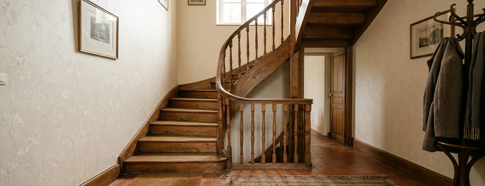

Reconnaître votre escalier en 30 secondes
Placez-vous en bas de l’escalier et regardez la dernière marche du haut. Trois situations possibles :
Vous voyez la dernière marche sans bouger la tête — votre escalier est droit : une seule volée, aucun virage. Rail standard, budget contenu, délai court.
L’escalier disparaît derrière un virage — quart tournant, demi-tour, marches d’angle (balancées) ou palier intermédiaire : votre escalier est tournant. Rail cintré sur mesure obligatoire.
Deux volées droites séparées par un palier — cas intermédiaire : deux appareils droits sont parfois possibles (on change de siège au palier), sinon un tournant unique. La visite technique départage, voir les cas qui trompent.
Ce que la forme du rail change concrètement
Le rail droit est un profilé de série, coupé à la longueur de votre volée le jour de la pose ou en atelier. Conséquences : disponibilité rapide (souvent 1 à 3 semaines entre commande et pose), prix maîtrisé, et possibilité de recouper le rail — c’est pourquoi l’occasion et la location existent presque uniquement en droit.
Le rail tournant est cintré en usine d’après un relevé laser de votre escalier, courbe par courbe. Conséquences : plusieurs semaines de fabrication (souvent 4 à 8 selon les fabricants et la complexité), un coût nettement supérieur, et un rail à la géométrie unique, invendable pour un autre escalier. En contrepartie, l’appareil suit exactement votre escalier, paliers compris, en un seul trajet.
Côté budget : comptez 2 500 – 5 500 € posé pour un droit contre 6 000 – 12 000 € pour un tournant (estimations nationales 2026). Le détail poste par poste est dans notre guide des prix du monte-escalier.
Les cas qui trompent
- ·Deux volées droites + un palier : installer deux appareils droits coûte parfois moins cher qu’un tournant… mais impose de se lever et changer de siège au palier. À réserver aux personnes encore à l’aise debout ; le professionnel doit chiffrer les deux options.
- ·Marches balancées (d’angle) sans vrai palier : même sans « virage » apparent, ces marches en éventail imposent un rail cintré. Un escalier peut être tournant sans en avoir l’air.
- ·Départ courbé en bas : quelques marches arrondies en pied d’escalier (fréquent dans les maisons anciennes) suffisent à basculer en sur-mesure — ou à négocier un départ du rail à la deuxième marche, à valider en visite.
- ·Porte ou couloir en bas de l’escalier : si le rail dépasse sur le passage, un rail relevable (option) ou un départ courbé le long du mur règle le problème — cela peut transformer un « droit » simple en installation plus technique.
Largeur, stationnement du siège et passage des proches
La plupart des escaliers français de 70 cm et plus acceptent un monte-escalier : siège, accoudoirs et repose-pieds repliés, les appareils récents laissent le passage libre aux autres occupants. Trois points à examiner malgré tout :
- ·La largeur utile une fois l’appareil replié : elle conditionne le passage à pied et la montée de meubles.
- ·Le stationnement du siège en haut et en bas : l’appareil ne doit bloquer ni porte, ni couloir, ni radiateur. Sur un tournant, le rail peut prolonger le trajet pour « garer » le siège hors passage.
- ·Les obstacles fixes : fenêtre basse, poutre, boîtier électrique le long du mur côté rail — à signaler dès la demande de devis.
Droit ou tournant : la comparaison en un tableau
Délais indicatifs constatés, variables selon fabricants et périodes — à confirmer sur devis.
Quand la visite technique est indispensable
Vous pouvez pré-identifier votre configuration vous-même, mais cinq situations imposent l’œil d’un professionnel avant tout chiffrage définitif : marches balancées, largeur inférieure à 70 cm, porte en pied d’escalier, plusieurs niveaux à desservir, ou marches anciennes dont la solidité est incertaine. Dans tous les cas, un devis ferme ne peut être établi qu’après relevé sur place — méfiez-vous d’un prix définitif annoncé par téléphone.
Décrivez la configuration de votre escalier
Droit, tournant, nombre de niveaux : en 2 minutes, votre description peut être transmise à un professionnel de votre secteur pour un chiffrage après visite. Gratuit et sans engagement.
Questions fréquentes
Mon escalier a un seul petit virage en haut : est-il tournant ?
Oui. Le moindre virage ou la moindre marche d’angle impose un rail cintré sur mesure, donc un appareil tournant. Seule alternative parfois possible : arrêter un rail droit avant le virage si les dernières marches restent franchissables.
Deux monte-escaliers droits coûtent-ils moins cher qu’un tournant ?
Souvent oui sur le papier (deux rails standards contre un rail sur mesure), mais il faut se lever et changer d’appareil au palier — inadapté si l’équilibre debout est fragile. Demandez le chiffrage des deux solutions.
Quelle largeur d’escalier minimum faut-il ?
La plupart des appareils s’installent à partir d’environ 70 cm de largeur utile ; des modèles compacts descendent en dessous. En deçà, un modèle debout (position semi-assise) peut rester possible — la visite technique tranche.
Le rail abîme-t-il l’escalier ?
Le rail se visse dans les marches, pas dans le mur. Au retrait de l’appareil, il reste des trous de fixation à reboucher — une réparation légère, sans reprise de structure.
Un tournant peut-il desservir trois niveaux d’un seul trajet ?
Oui : le rail sur mesure peut enchaîner plusieurs volées et paliers en continu. Chaque niveau supplémentaire ajoute des mètres de rail et des courbes, donc un surcoût — à mettre en regard d’un second appareil.
Escalier en colimaçon : est-ce possible ?
Souvent oui, avec un rail hélicoïdal sur mesure, à condition que la largeur et le rayon de courbure le permettent. C’est l’un des cas les plus techniques : visite indispensable, budget en haut de fourchette.
Puis-je mesurer mon escalier moi-même pour obtenir un prix ferme ?
Vos mesures permettent une pré-estimation utile, mais aucun fabricant ne lance un rail sur mesure sans relevé professionnel (souvent laser). Le prix ferme suit toujours la visite technique.